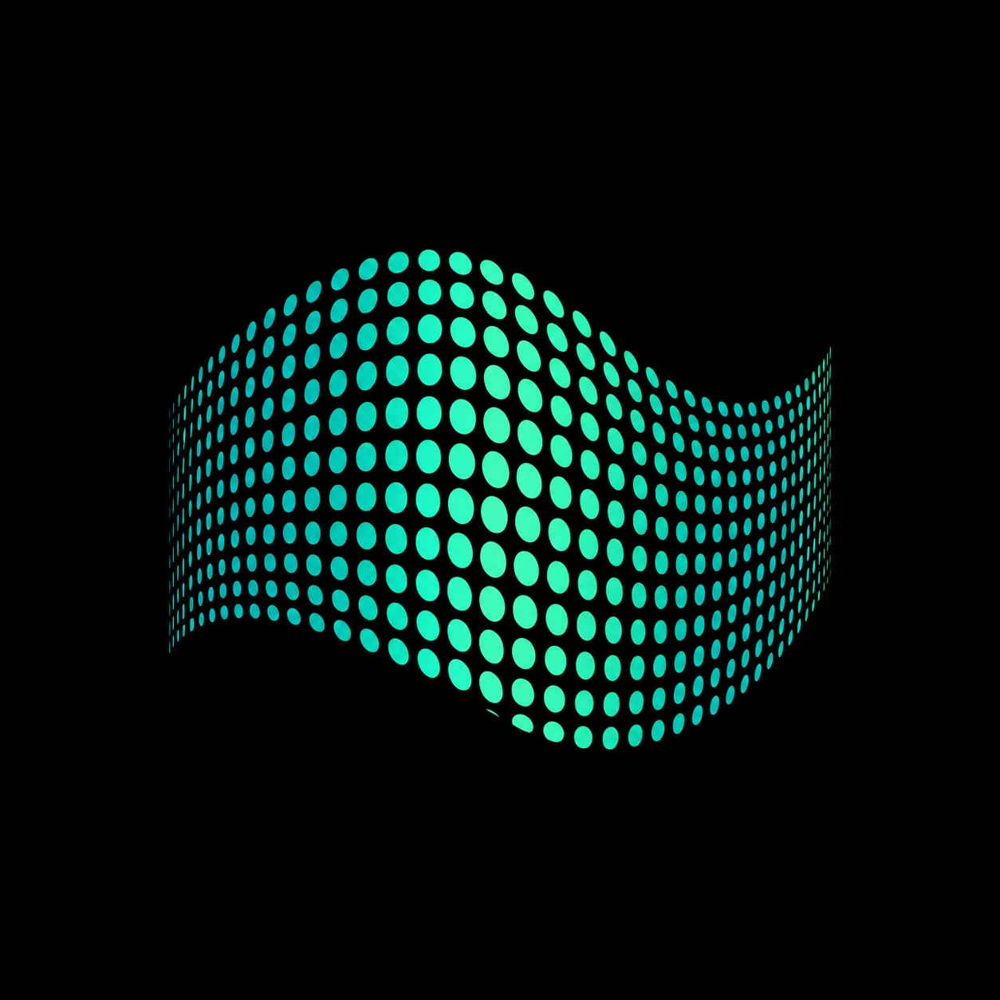
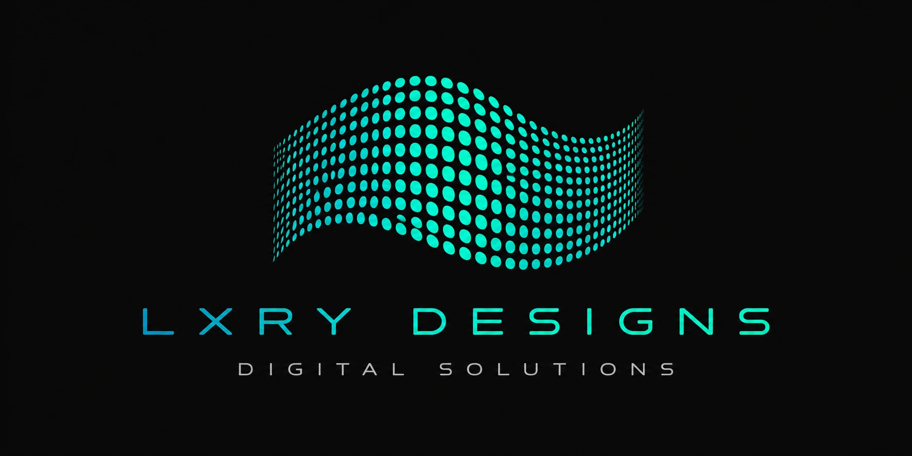

LXRY Designs
Free digital guide · 2026
10 practical AI workflows that give a small business back 10+ hours a week — the tools, the use-cases, and how to start. No jargon, no fluff.
Start here
Most small businesses lose the best part of a day every week to repetitive, manual work — chasing enquiries, copying data between tools, writing the same replies, rebuilding the same reports.
AI won't run your business. But it will quietly take those jobs off your plate — so your time goes to the work only you can do.
This kit is the ten workflows we see save the most time, ranked by how quickly you can put them to work. Each lists what it does, the tools that do it, roughly how many hours it gives back, and the smallest first step.
How to use this kit
Choose a single workflow that matches a job you do every week.
Set it up in an afternoon. Keep it simple; you can refine later.
Once it's running without you, pick the next one from the list.
Run all ten and the time adds up fast. You don't need all ten — even three or four of these compound into a noticeably lighter week.
The chart on page 7 shows where the biggest wins are.
The 10 workflows
AI reads incoming email, sorts it by intent and urgency, and pre-writes on-brand replies for you to approve and send.
Every enquiry — form, DM, email — is logged to your CRM automatically, enriched and deduplicated, so nothing slips.
Turn a one-line description into a formatted quote or invoice, ready to review and send.
Tip · Start with the workflow that annoys you most on a Monday morning. Momentum beats perfection — you can refine any of these later.
Calls are transcribed automatically, then distilled into decisions and a clean task list sent to the right people.
One long piece — a post, a talk, a call — becomes several social posts and short-form video clips.
Ask for a review at the exact right moment, watch new ones land, and draft a reply to each.
Tip · You don't need all ten. Three or four compounding wins already reshape your week — and each one funds the time to set up the next.
Pull structured data out of PDFs, receipts and forms straight into your tools — no more retyping.
Let people book you directly, and send automatic reminders and follow-ups so nobody no-shows.
An on-brand assistant answers your most common questions instantly — on the site or on WhatsApp.
Dashboards build themselves from your tools, so the numbers that matter are ready every Monday.
The payoff
Rough weekly time saved once each workflow is running. Start at the top.
That's three working days handed back every week — or, more realistically, the four or five workflows that fit your business, giving you a clear half-day-plus to spend on growth instead of admin.
Do it right
You're a compliance-facing business either way. These six habits keep your automations on the right side of GDPR, Swiss FDPIC and the incoming EU AI Act.
One hub · every workflow · human-supervised
We audit your stack, find the hours hiding in manual work, and build the automations — compliantly, on both sides of the Geneva border. Every engagement starts with an audit and a straight answer.
Book an AI Automation AuditFollow @LXRYDesigns